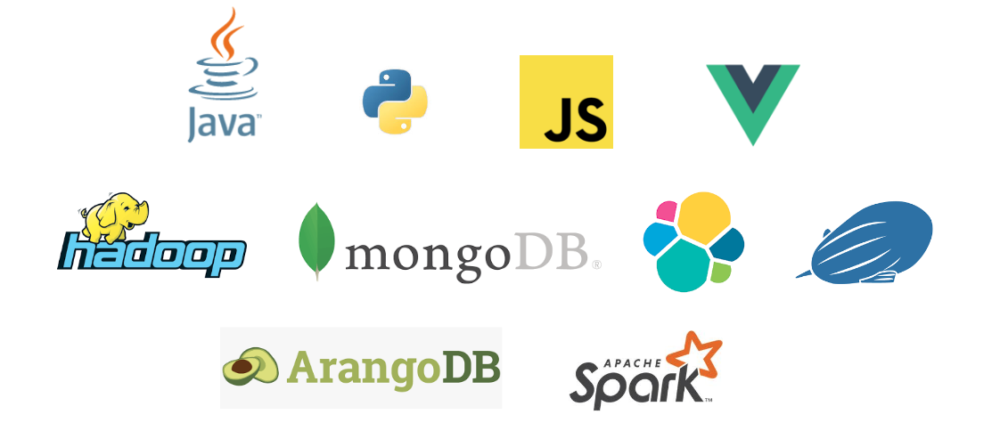

Stream processing et SQL
Bruno Bonnin
About me

github.com/bbonnin
Streams
Flot continue et sans fin de données
- IoT
- Monitoring
- Click streams
- Finance
- Jeux en ligne
- ...
Pourquoi SQL in 2017 ?
C’est un standard !
Largement adopté par tous (même si on peut/veut l’éviter…)
Développeur
Architecte data
Data scientist
...
Les streams sont des données comme les autres !
Alors pourquoi ne pas utiliser SQL pour les requêter ?
SQL vs. Stream processing
| Relational Algebra / SQL |
Stream Processing |
| Relations (or tables) are bounded (multi-)sets of tuples. |
A stream is an infinite sequences of tuples. |
| A query that is executed on batch data (e.g., a table in a relational database) has access to the complete input data. |
A streaming query cannot access all data when is started and has to "wait" for data to be streamed in. |
| A batch query terminates after it produced a fixed sized result. |
A streaming query continuously updates its result based on the received records and never completes. |
ci.apache.org/projects/flink/flink-docs-release-1.3/dev/table/streaming.html